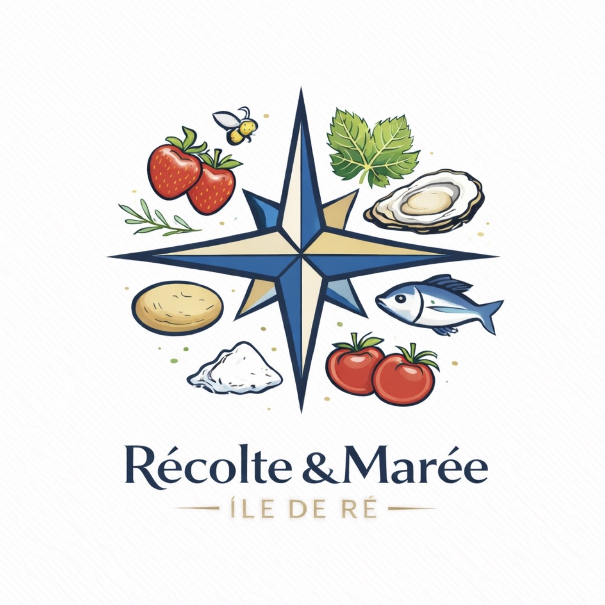

Le goût de l'île,
Le goût de l'île,
chez vous.
Des paniers repas d'exception, entre marais salants et océan.
La Récolte de la Semaine
Sélectionnez vos 3 escales culinaires.

Saumon & Pommes de Ré
Pommes de terre AOP et fleur de sel artisanale.
25 MIN
IODÉ

Poulet Fermier au Miel
Miel de fleurs sauvages récolté sur la côte.
40 MIN
TERROIR

Huîtres de Cabane
Directement du parc à votre table.
20 MIN
PREMIUM

Salade Folle des Marais
Légumes croquants et herbes salines de l'île.
15 MIN
VÉGÉTARIEN

Pâtes Fraîches aux Coques
Pêchées à pied le matin même.
15 MIN
EXPRESS
Votre Panier Personnalisé
Chaque panier comprend les ingrédients frais pour 3 repas complets.
Total de l'escale
0.00 €
Paiement 100% sécurisé